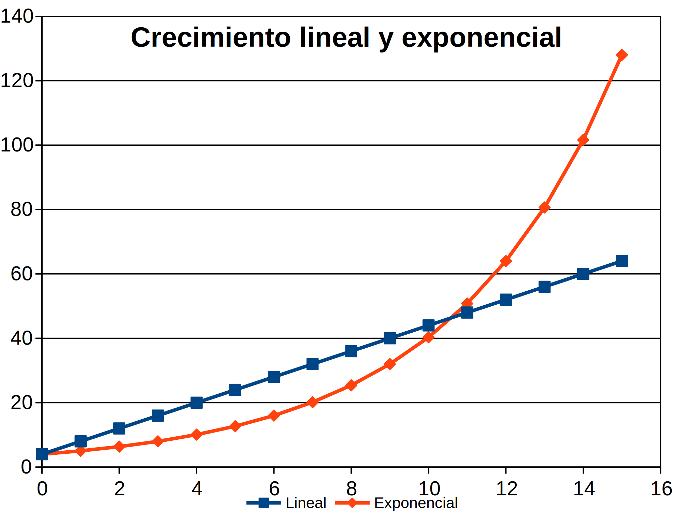
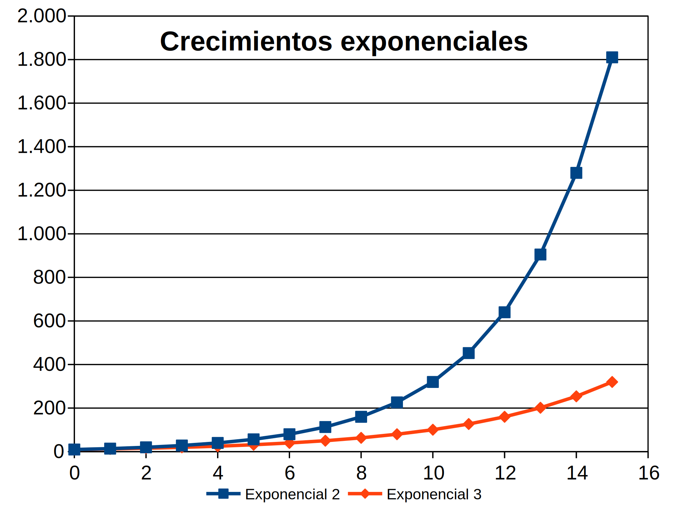
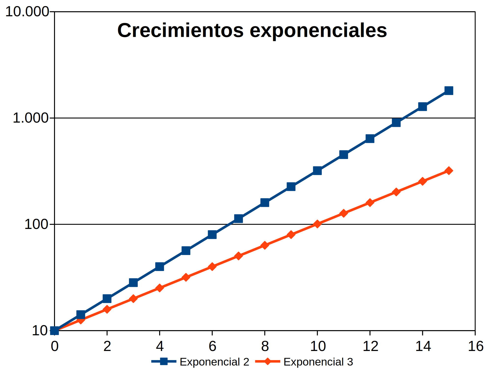
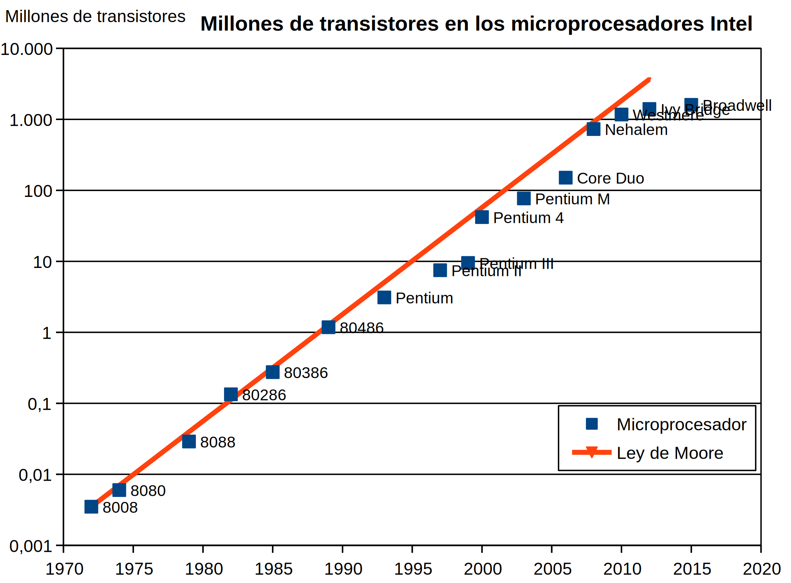
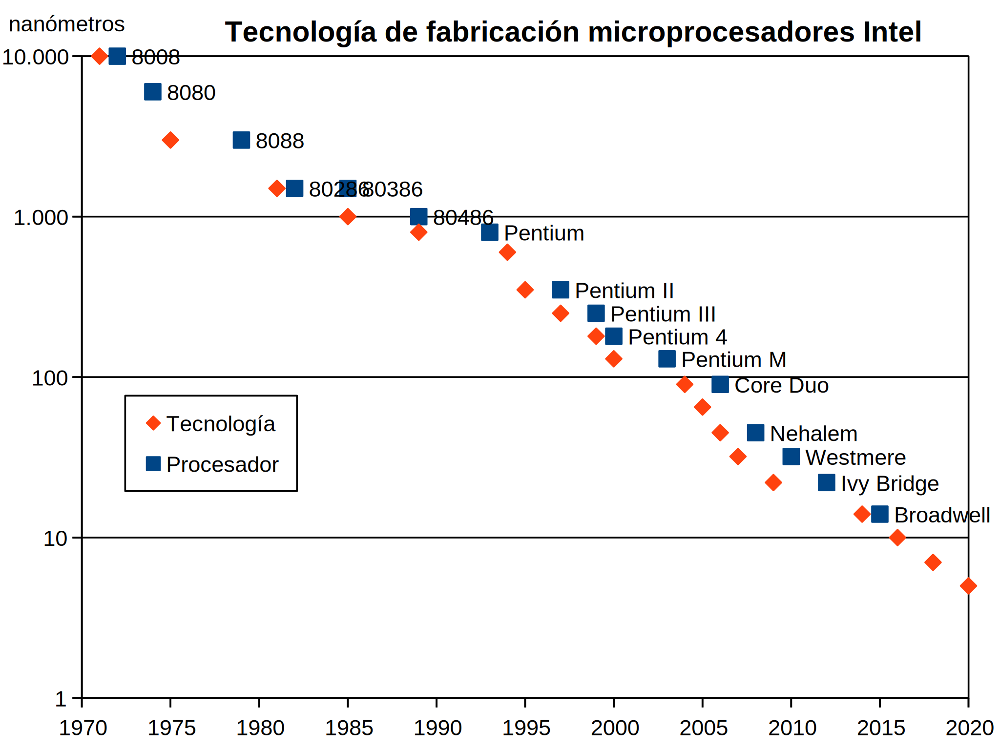
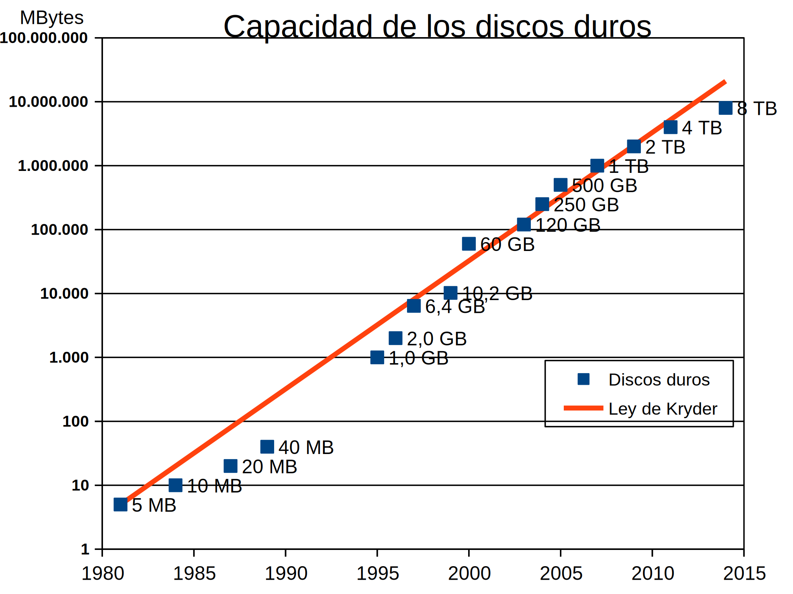
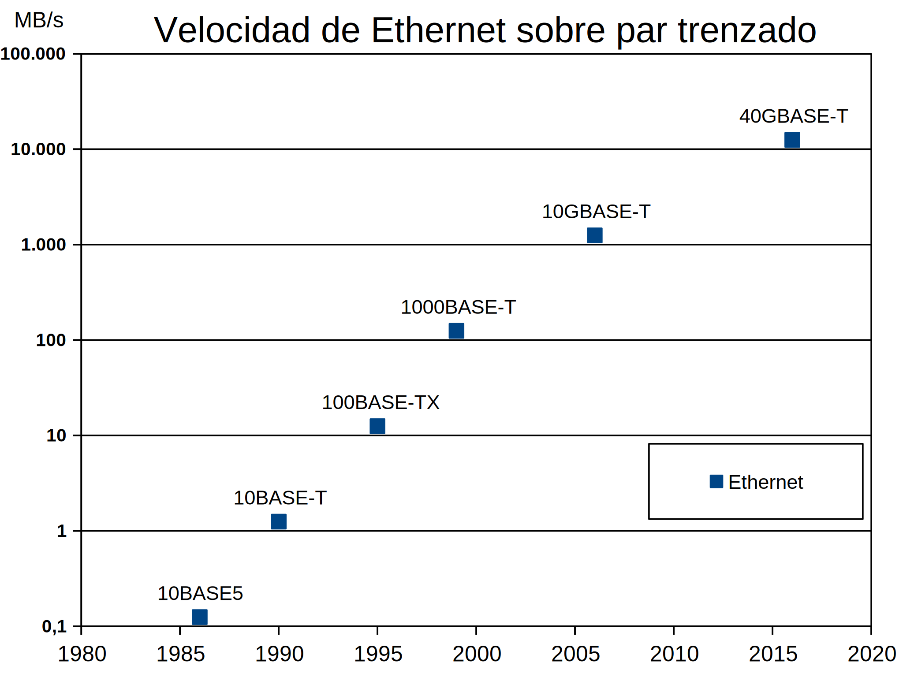

Desde la aparición en los años 40 de los primeros ordenadores (basados en dispositivos electromecánicos), los ordenadores han evolucionado de forma exponencial, permitiendo su utilización en cada vez más ámbitos de la sociedad. En esta lección se ilustra el crecimiento exponencial de algunos elementos hardware de un ordenador.
Nota: La información para la elaboración de los gráficos se ha obtenido básicamente en la Wikipedia.
Una magnitud tiene un crecimiento lineal cuando a su valor se le añade (sumando) una cantidad fija en cada unidad de tiempo. Una magnitud tiene un crecimiento exponencial cuando cuando su valor se multiplica en una cantidad fija en cada unidad de tiempo. Al representar las magnitudes en una gráfica, el crecimiento lineal se traduce en una línea recta mientras que el crecimiento exponencial se traduce en un curva. A largo plazo, el crecimiento exponencial acaba superando siempre al crecimiento lineal. La gráfica siguiente muestra dos magnitudes, una creciendo linealmente y la otra exponencialmente.

Un parámetro útil a la hora de describir magnitudes que crecen exponencialmente es el tiempo que tardan en duplicarse las magnitudes. Cuanto menor sea ese tiempo, más rápidamente crecerá la magnitud. La gráfica siguiente muestra dos magnitudes que crecen exponencialmente. Una se duplica cada dos unidades de tiempo y la otra cada tres unidades de tiempo.

Para reconocer si una magnitud crece exponencialmente, y en general para representar manitudes que crecen exponencialmente, es conveniente representar la gráfica con una escala logarítmica en el eje Y. Una escala logarítmica es aquella en que cada intervalo representa 10 veces más que el anterior. Las curvas exponenciales se transforman entonces en rectas. La gráfica siguiente muestra las mismas dos magnitudes que crecen exponencialmente de la gráfica anterior, pero con escala logarítmica en el eje Y. Una se duplica cada dos unidades de tiempo y la otra cada tres unidades de tiempo. En la gráfica puede verse fácilmente, por ejemplo, como la magnitud que se duplica cada 2 unidades de tiempo se multiplica por 10 aproximadamente cada 10 unidades de tiempo, mientras que la que se duplica cada 3 unidades de tiempo se multiplica por 10 cada 6,5 unidades de tiempo.

En los gráficos que se muestran en esta lección y que ilustran la evolución de los ordenadores se utilizan escalas logarítmicas en el eje Y, de manera que la alineación de los puntos significa realmente crecimientos exponenciales.
En 1965, Gordon Moore, fundador de Intel, publicó en una revista de electrónica que en los años anteriores el número de transistores de los circuitos integrados se había duplicado aproximadamente cada dos años. Esta observación se conoce desde entonces como la Ley de Moore y la industria electrónica la sigue utilizando todavía como guía para el desarrollo de nuevos productos.
La gráfica siguiente ilustra cómo los microprocesadores creados por Intel se han ajustado a la Ley de Moore en los últimos 45 años. Los puntos de la gráfica corresponde a algunos de los microprocesadores de Intel, mostrando su fecha de comercialización en el eje X y el número de transistores en el eje Y. La línea continua de la gráfica corresponde a la progresión teórica de acuerdo con la Ley de Moore (duplicación cada dos años).

Esta progresión ha sido posible gracias a los avances en la tecnología de fabricación de microprocesadores. Estas tecnologías se suelen denominar por la escala del proceso litográfico utilizado en la fabricación (expresada en micrómetros en los años 70 y 80, y en nanómetros desde los años 90).
Hace años que el desarrollo de nuevas tecnologías de fabricación no dependen de una sola empresa, sino del conjunto de la industria de la electrónica, agrupada en la asociación International Technology Roadmap for Semiconductor, que planifica y coordina la implantación de nuevas tecnologías de fabricación. El límite físico de las tecnologías actuales se encuentra alrededor de 1 nm.
La gráfica siguiente ilustra la evolución de las tecnologías de fabricación a lo largo de los últimos 50 años. Los puntos sin etiqueta corresponden a las tecnologías de fabricación, mostrando su fecha de disponibilidad en el eje X y el tamaño en nanómetros en el eje Y. Los puntos con etiqueta corresponden a microprocesadores Intel fabricados con la correspondiente tecnología. Se han incluido también los puntos correspondientes a la fecha prevista de implantación de las próximas tecnologías (14 nm, 10 nm, 7 nm y 5 nm).

Los discos duros de ordenador guardan la información en un sustrato magnético. Aunque no son dispositivos electrónicos, su evolución también ha seguido una evolución exponencial (que se denomina a veces Ley de Kryder, en referencia a Mark Kryder, jefe de investigación del fabricante de discos duros Seagate). Esta evolución ha sido todavía más rápida que la de los procesadores, puesto que en los últimos 35 años la capacidad de los discos duros se ha duplicado aproximadamente cada año y medio.
La gráfica siguiente ilustra la evolución de la capacidad de los discos duros para PC a lo largo de los últimos 35 años. Los puntos corresponden a diferentes discos duros, mostrando su fecha de disponibilidad en el eje X y su tamaño en MBytes en el eje Y (la etiqueta indica el tamaño en MB, GB o TB).

Las primeras redes de ordenadores se crearon a finales de los años 50. En los primeros años 70 Robert Metcalfe desarrolló una red de área local sobre cables coaxiales a la que bautizó como Ethernet. Ethernet se empezó a comecializar en 1980 y se ha convertido en el estándar para redes de área local (sobre cables de fibra óptica o sobre hilos de cobre de par trenzado). Entre 1985 y 2005, las nuevas versiones de Ethernet multiplicaron por diez la velocidad cada cinco años (equivalente a duplicarse cada año y medio), aunque desde entonces el ritmo se ha reducido.
La gráfica siguiente ilustra la evolución de la velocidad de Ethernet sobre par trenzado a lo largo de los últimos 35 años. Los puntos corresponden a las diferentes normas IEEE 802.3, mostrando su fecha de aprobación en el eje X y su velocidad en MBytes/s en el eje Y (la etiqueta indica el nombre de la norma, cuyo número expresa la velocidad en Mbits/s).
